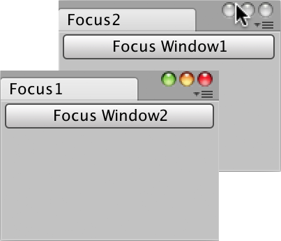

EditorWindow.Focus
public void Focus();
Description 描述
Moves keyboard focus to another EditorWindow.
The Focus public method controls which window is active for use of the keyboard. In the examples below the active EditorWindow keyboard is changed to a different EditorWindow keyboard. See Also: focusedWindow.  Focus one window by pressing the button on other window.
// EditorWindow.Focus // // A window that change state to the second window when // the button is pressed.
using UnityEngine; using UnityEditor;
public class FocusExample1 : EditorWindow { public static FocusExample1 Instance = null;
[MenuItem("Example/Focus Example1")] static void Init() { GetWindow<FocusExample1>("Focus1"); }
public FocusExample1() { Instance = this; }
void OnGUI() { if (GUILayout.Button("Focus Window2")) { FocusExample2.Instance.Focus(); } } }
// Second window
using UnityEngine; using UnityEditor;
public class FocusExample2 : EditorWindow { public static FocusExample2 Instance = null;
[MenuItem("Example/Focus Example2")] static void Init() { GetWindow<FocusExample2>("Focus2"); }
public FocusExample2() { Instance = this; }
void OnGUI() { if (GUILayout.Button("Focus Window1")) { FocusExample1.Instance.Focus(); } } }